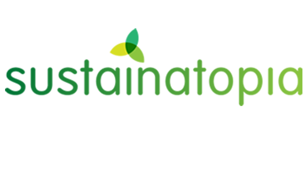
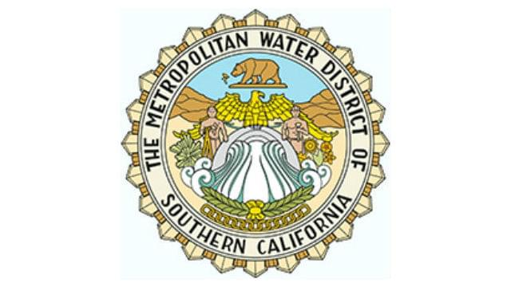
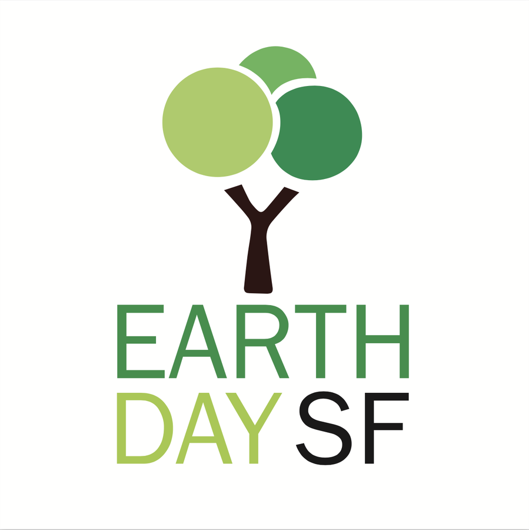
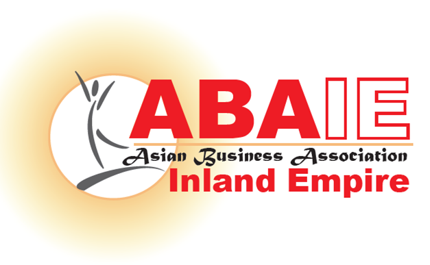
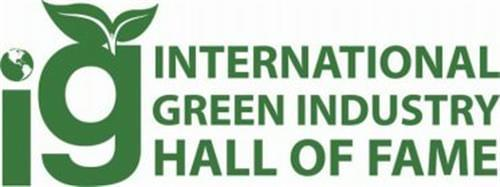

Watch, listen and look back
EEG's videos and educational presentations, b4Neptune's music, our California Educational Tour, archival photographs and the stories behind our work.
Videos
What do we mean by complete harmony?
Even if one aspect of ourselves is seemingly in harmony with a particular experience, unless we are in tune with all of our dimensions, we are limited and we are incomplete. Also on YouTube.
Global Warming Continues to smother life.
What happens on one side of the planet, it's become clear. It affects what's on the other side of the planet. And everything on it. Or in it.
TikaKnows lessons
Legal Self-Defense Academy
Pro se support
Praise from clients
Music to inspire long term real solutions
b4Neptune was formed by EEG's Essie Leigh and Alysa S. Together they became singer/songwriter/music producers for EEG to have a glorious and inspirational musical platform to inspire more long term real solutions through song. Follow EEG on SoundCloud.
Armony
We're a growing army. We're all finding harmony. Were on our way to solving hunger. In a way our world is getting younger.
Listen to b4neptunes, “Armony” single here.
Steel Birds
It meant a lot. I saw you first. I felt your love. You gave me birth. But freedom was not your way of life. So you locked the doors. Kept me in a cage where my heart just turned to steel. I forgot who I was and I forgot how to feel.
Listen to b4neptunes, “Steel Birds” single here.
Supergirl
These ups and downs are killing me. I'm reaching for the sky. It's crazy even when I'm laughing. I wonder who the hell am I?
Listen to b4neptunes, “Supergirl” single here.
Disillusion
…And Were Still Chasing Gold. Disillusion. Disillusion For The Soul.
Listen to b4neptunes, “Disillusion” single here.
Tsunami
Featured with “Where Are The Heroes of the World?”
“Bringing our planet into balance is our future and is the direction to take for personal as well as collective success.”
This is an excerpt from our California Educational Tour, drawn from The Sustainable Planet & The Total Vantage Point, presented to the following audiences:

SustainatopiaCentury City
Metropolitan Water DistrictDorothy Chandler Pavilion
Earth Day San Francisco
Inland EmpireAsian Business Conference
International Green IndustriesHall of FamePhotographs


Listen to Prof. Alan Tratner on GreenisGood Radio.
“In 1972 EEG became a tax-exempt educational and scientific research foundation with a global mission. In that same founding year, EEG participated and contributed to the First United Nations International Conference on the Human Environment held in Stockholm, Sweden.”— Prof. Alan Tratner, Founder
An idealistic entrepreneur sets out to buy a German restaurant and instead gets embroiled in a Haus of Thieves
Excerpts from the story of EEG president Lielle Arad, a prevailing self represented litigant. See the Legal Self-Defense Academy.
Tell me what you want. What is it that you want?
Kris Stingber looks and talks like Bill Stein in Ferris Bueller's Day Off. His website states he is an entertainment lawyer. The entertainment industry is notorious for breaching contracts. Kris is an experienced litigator and he is also a settler.
I want justice.
Kris bursts out laughing.
There is no justice in our judicial system. When it comes down to it, it's who's the better liar.
Our meet and confer is a formality. A requirement before a demurrer to our first amended cross-complaint. A demurrer is an attempt to cancel our complaint altogether. Like an objection. And it can have that effect. It can wipe my complaint out entirely. A demurrer keeps my complaint in limbo where it technically is not “at issue” in the court.
I'm a bit unsuspecting at 5 foot and fairly petite. I'm sharp, but litigation is another level. Legal terms are not all intuitive. The work is grueling, technical and tedious. The law seems insurmountable to comprehend in any crash course. A lot is at stake and this is more reading and writing than I have ever experienced in my life. I don't intimidate Kris or his clients.
It's 2:30 in the morning and I'm still scrolling through 100+ pages of moving papers. “Uncertainty”… “Lack of standing”… “Sham pleading”… Kris told us he is unleashing his dogs of war. But dogs don't exactly fight with their intellect. So I feel I can overcome this dime store demurrer. I take a deep breath and get up from my computer to walk through my quiet house. My son Quest sleeping soundly with his dad upstairs.
I walk into the cold dark garage where a fourth of it has been converted into a makeshift office from the previous tenant. I push open the lightweight door to brown berber carpet and a corner desk made out of a mish mosh of different furniture parts. I touch the exposed drywall. This will be my war room.
January 10, 2020
It's 5pm and I'm refreshing the courts website every minute waiting for the tentative ruling from our judge to appear. Lilly and I are on the fourth demurrer now. It's been 15 months and we still do not have our case at issue.
This may be our last chance. We had spent the month at the Pepperdine Law Library, scouring the books for case law and statutes to support our arguments. Our opposition reads to me this time like a love affair with the law. Every line sung to me like a song of law and fact in undeniable harmony. But no matter how meticulous my moving paper felt to me, I'm convinced I've blown it. I concede to my non profit board that I tried as hard as I could, and I'm sorry but I've failed.
The horse has left the barn.
Kris liked to colloquial in idioms. He is not convinced in my plea to stipulate to some of the main claims alleged in my complaint. I'm prepared to drop claims entirely in fear of a looming negative ruling that could render my complaint dismissed.
It's here. I can't read it. Lilly, you read it.
Lilly starts to skim the paper. My eyes avoid the details at all cost until they recognize the word overruled. Now I want to look. I see another paragraph start with the word overruled. I skip to the end. OVERRULED. All fourteen causes of action in our complaint survive what feels like an attempted demurrer-der. My nemesis is ordered to answer. I can feel the year of stress in my shoulders relax a little. My hand wanting to stay suspended in a high-five forever. Our case is at issue and I enroll in law school.